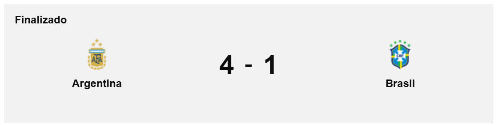
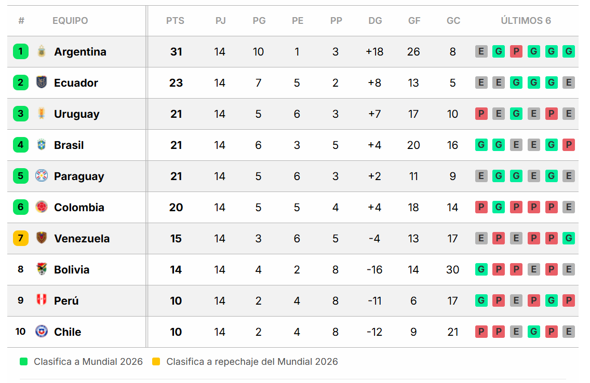

Ya clasificada al Mundial Estados Unidos-México-Canadá 2026 porque en la antesala del clásico Bolivia no le ganó a Uruguay -igualaron 0 a 0-, la selección argentina goleó 4 a 1 a Brasil en el encuentro correspondiente a las eliminatorias sudamericanas y continúa en lo más alto de la tabla de posiciones. La albiceleste armó una verdadera fiesta de fútbol, que se cerró con fuegos artificiales para enmarcar una de las mejores actuaciones históricas del ciclo de Lionel Scaloni. Se trató, además, de la primera vez en la que la Verdeamarela sufrió cuatro goles en un partido de este certamen.
Las celebraciones argentinas del encuentro que se disputó en el estadio Monumental y arbitró el colombiano Andrés Rojas fueron de Julián Álvarez, Enzo Fernández, Alexis Mac Allister y Giuliano Simeone, mientras que Matheus Cunha descontó transitoriamente para el visitante. En la previa, Raphinha “calentó” el clásico diciendo que Brasil le iba a dar una “paliza” al campeón del mundo y bicampeón de América.
Argentina protagonizó una noche histórica ante Brasil en el estadio Monumental por la fecha 14 de las Eliminatorias rumbo al Mundial 2026. El equipo de Lionel Scaloni, aún sin Lionel Messi por lesión, arrancó con intensidad y precisión: a los 4 minutos, Julián Álvarez aprovechó un error en la salida brasileña para abrir el marcador. Rápidamente, a los 12’, Enzo Fernández amplió la ventaja tras una extraordinaria jugada colectiva de 33 pases, demostrando la superioridad táctica y técnica del equipo.
Brasil logró descontar a los 26 minutos gracias a Matheus Cunha, que definió tras un fallo defensivo argentino, lo que generó cierta tensión momentánea. Sin embargo, Argentina no se desordenó y volvió a golpear: Alexis Mac Allister anotó el 3-1 a los 37’, sellando una primera mitad completamente dominada por la Albiceleste.
En el complemento, el conjunto argentino mantuvo el control del juego, neutralizando los intentos de reacción de Brasil. A los 71 minutos, Giuliano Simeone —hijo del “Cholo”— puso el 4-1 definitivo con una gran definición, coronando una actuación brillante. Con esta victoria, la Albiceleste no solo goleó a su clásico rival, sino que también selló su clasificación anticipada al Mundial, liderando la tabla con autoridad. Fue la peor derrota de Brasil en la historia de las eliminatorias.
